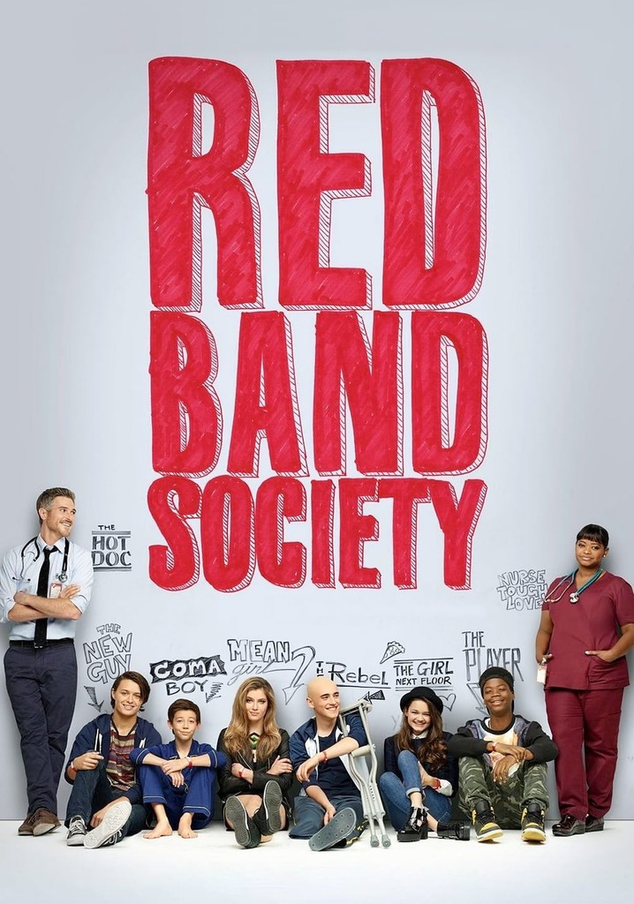
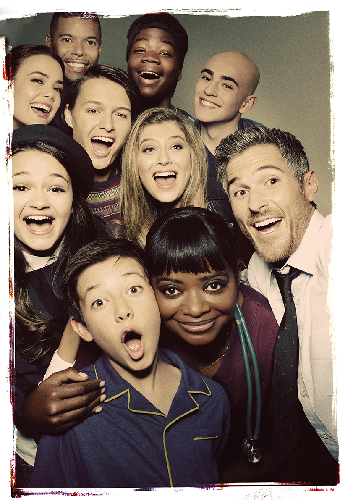
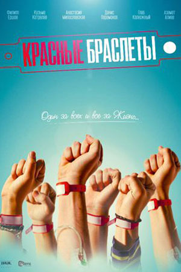
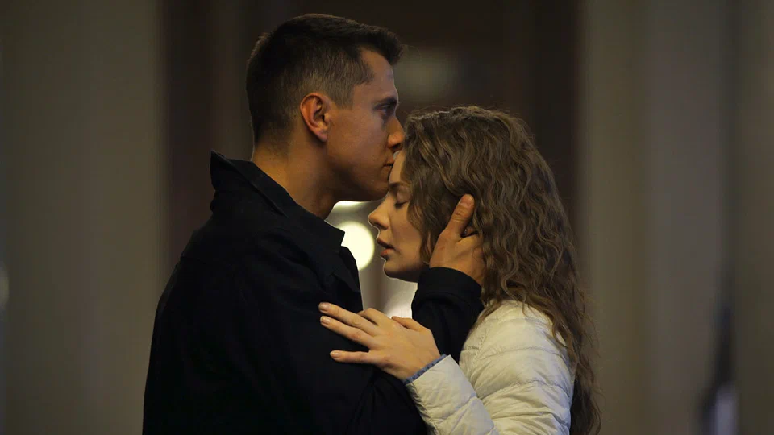
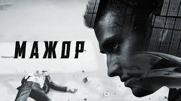
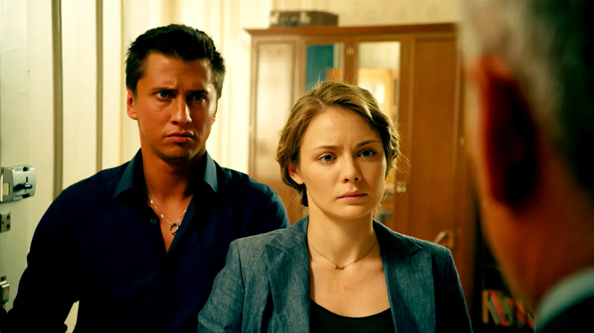
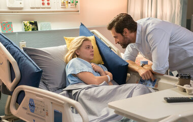
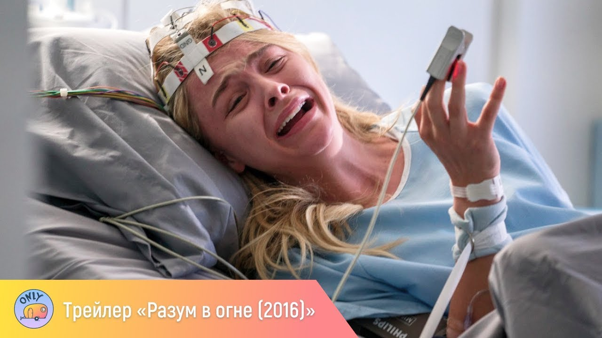

Мои любимые фильмы
Красные браслеты
Краткое содержание фильма
Сериал рассказывает о группе подростков в детской больнице,
об их взрослении и борьбе c обстоятельствами,
о том, как герои дружат и любят, отвечают на вызовы судьбы и делают принципиальные выборы.
Кадры из фильма



О фильме
2012
США
Драма
Дэн Лернер
Мажор
Краткое содержание фильма
Мажор виртуозно сбегает из тюрьмы и начинает новую жизнь. Новую сладкую жизнь!
Соколовский вливается в светскую тусовку, где все сидят на новом синтетическом наркотике,
и его снова окружают тачки, виллы и топ-модели. Друзья, враги и ФСБ идут по следу Мажора,
пытаясь понять, какую игру он затеял и на чьей он стороне. Игорь же пытается понять,
кто он сам — предатель, святой или всё тот же… Мажор?
Кадры из фильма



О фильме
2014
Россия
Детектив, мелодрама
Константин Статский
Разум в огне
Краткое содержание фильма
Успешная девушка однажды просыпается в медицинской клинике. Она абсолютно не помнит,
что с ней произошло, и как она сюда попала, ведь до пробуждения она вела довольно обычный образ жизни.
У неё была хорошая перспективная работа, жених, и ничто не предвещало беды.
Теперь ей ставят различные диагнозы, но ни один не подтверждается.
Кадры из фильма


О фильме
2016
США
Драма, Биография
Джерард Барретт